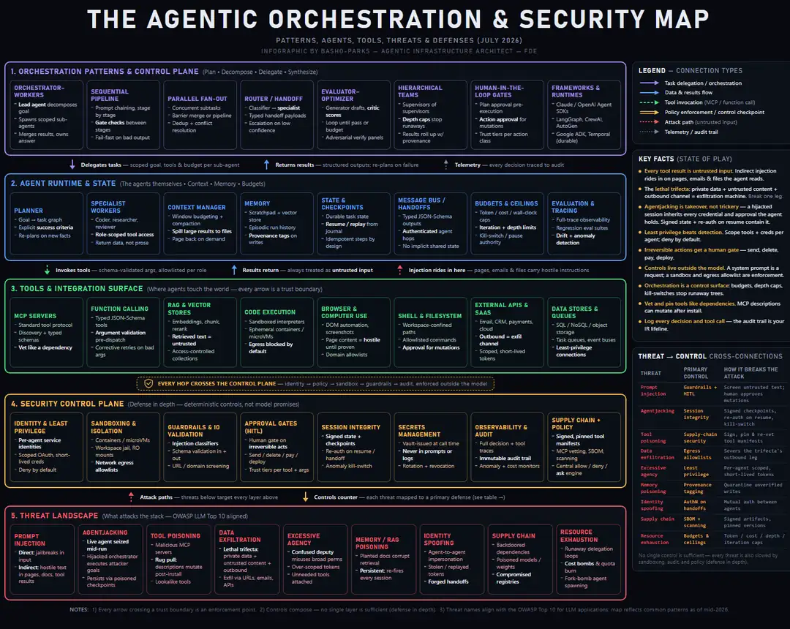

An AI agent with credentials is an actor on your network, running with whatever permissions somebody clicked past during setup. Agentic orchestration's the default architecture; its security model isn't, and that gap's why I drew this map.

Tools are where an agent stops thinking and starts touching, and every tool call crosses a trust boundary. Anything flowing back up is hostile until proven otherwise, because models follow instructions wherever they find them and prompt injection rides in on the pages, emails and files you asked the agent to read.
The control plane under it is the answer: per-agent least-privilege identity, sandboxes with egress allowlists, guardrails, approval gates on anything you can't undo, session integrity and immutable audit logs. Every one's deterministic and lives outside the model. A system prompt is a request and a sandbox is a fact.
The bottom row's nine threats, prompt injection through agentjacking, take their names from the OWASP Top 10 for LLM applications. Data exfiltration runs on the recipe Simon Willison named the lethal trifecta: private data, untrusted content and an outbound channel. Knock out any one leg and the attack falls over. People nod along and don't apply it, because breaking a leg means telling somebody they can't have the feature they wanted.
Where the Infrastructure Decision Enters
In the cloud the outbound leg's a policy you pray survives the next integration; on an air-gapped box in your own building it's absent, and an agent can't beacon data when there's no road out. Identity and audit follow the same logic on hardware you own, and for ITAR and CUI environments topology's the one control you can walk over and check.
The air gap doesn't stop prompt injection. A poisoned document on your own file share still carries hostile instructions. That's why the guardrails, approval gates and audit ledger sit inline on every call; on an Island Mountain deployment the Woven Security and Governance Fabric ships them in the crate.
Before an agent gets a credential, pick the trifecta leg you'll break and whose building that control lives in.